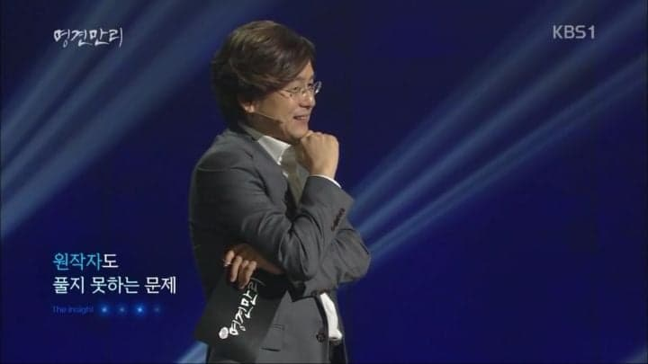
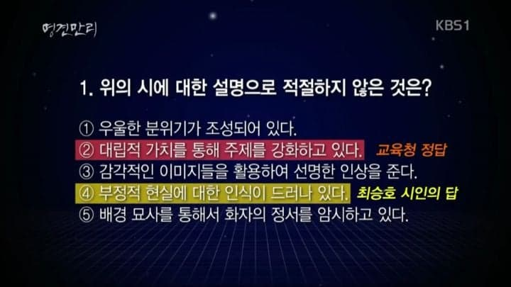
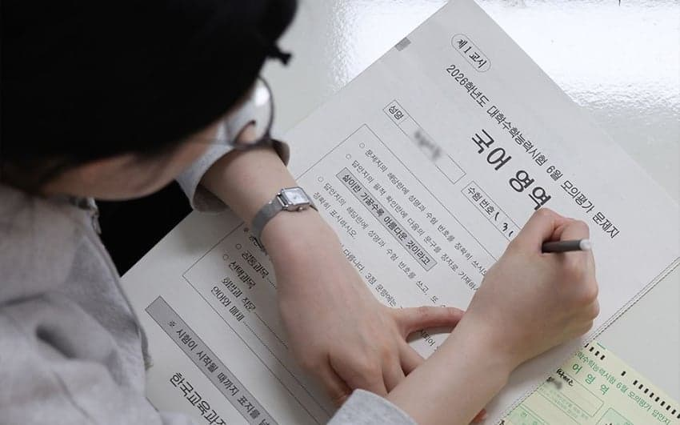
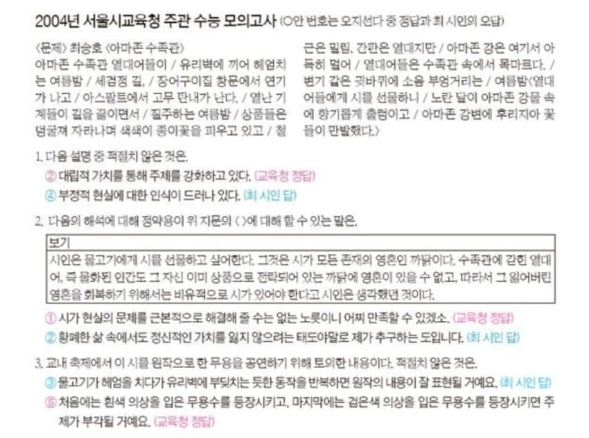
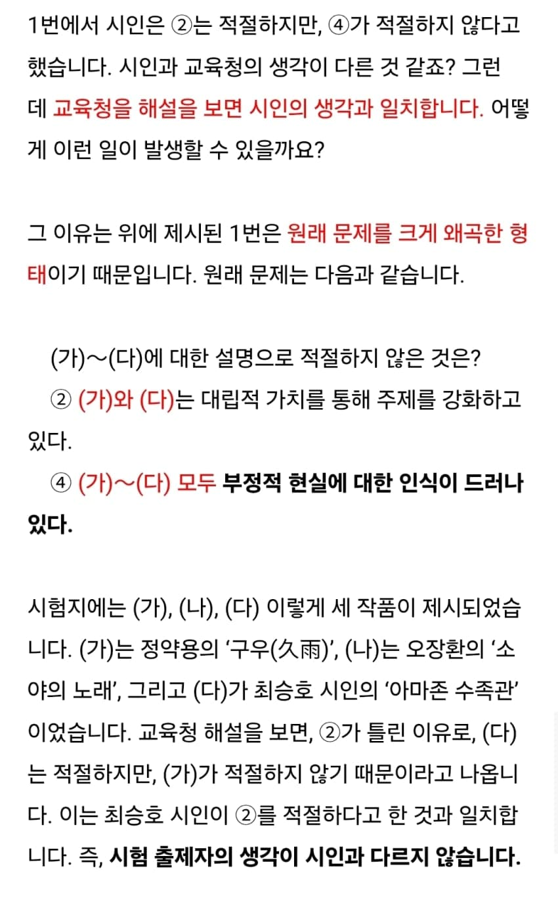
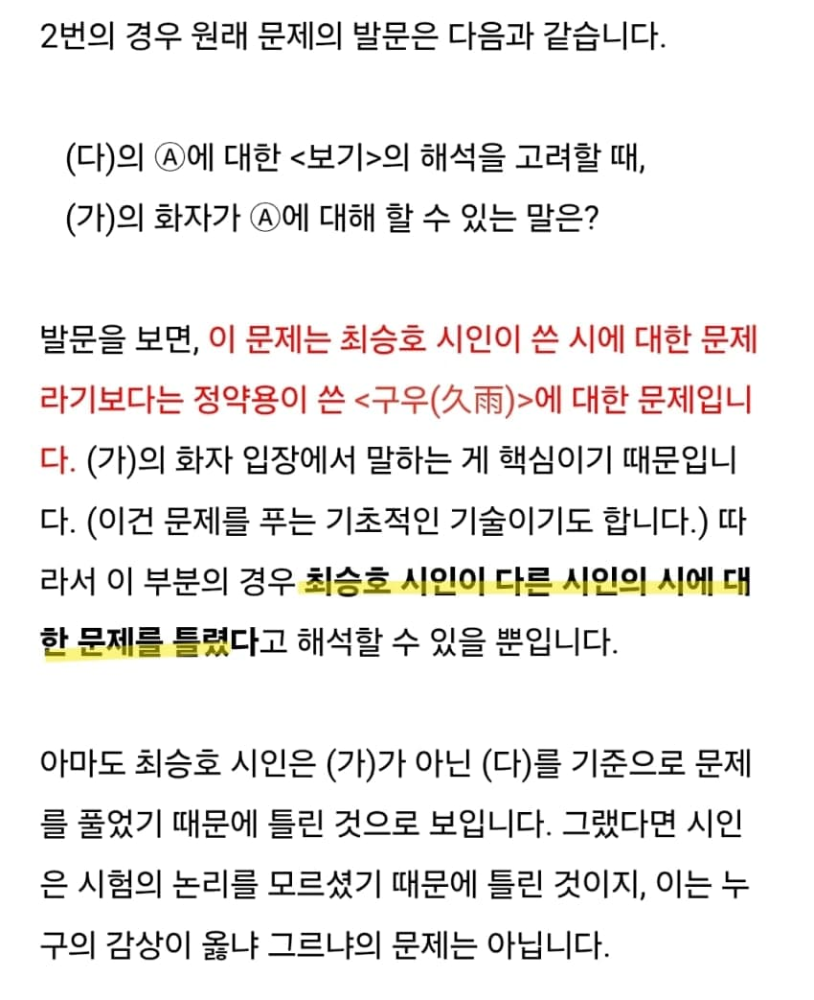

바로 '원작자/교수도 틀리는 수능국어'따위의 수능무용론을 사라지게 한것

이전까진 수능시즌마다 허구헌날 원작자도 수능국어 틀린다, 원어민도 수능영어 틀린다 식의 수능무용론이 퍼지곤 했었다
조금이라도 공부를 해본 사람이라면 수능 문제 자체가 정규과목의 탈을 쓴 논증/추론 문제라는것을 알것이다 애초에 수능부터가 암기위주의 학력고사가 비효율적이란 지적에 미국 sat를 거의 그대로 파쿠리해 온 시험이다

어떤 전공을 목표로 하든 모든 수험생에게 일괄적으로 적용되어야 하기 때문에 국어에선 작문능력보다 이해력을, 수학에선 비판적 사고력보다 논리적 사고력을 보게되었다 글을 존나 잘쓰거나 문제 하나하나에 허점/조건을 따져보며 파고드는 '천재'들을 가려내긴 어렵지만 이름 그대로 학문을 '수학'하기 위한 '능력'을 '정량화' 하는데에는 특화되어있는 셈이다
'공정성'과 '특이성'은 반비례하는 가치이고(천재를 가려내기위해 특이성있는 시험을 제시하면 뒷구멍 입학이 늘어나고 공정하게 정량화하면 특정분야에 두각을 드러내는 천재를 간과하게 된다), 수능은 죽어도 공정을 포기하지 못하는 한국인들 정서에 최적화 되어있는 시험인것...



수능 국어 무용론에 가장 많이 차용된건 원작자도 다 틀렸다던 2004년 모의고사이다 그러나 이건 문제를 가져오는 과정에서 원래 맥락과 크게 달라졌거나, 제시된 '정약용'의 관점에서 해석하라는 조건을 간과했기 때문이다
애초에 문학작품은 보는사람마다 관점이 다를수밖에 없고, 교육청은 논란을 피하기위해 명확한 조건을 제시한다 문학작품에 대한 해석에는 정답이 없더라도 문제에서 주어진 조건에 대한 논리적 근거와 오류는 존재하기 때문이다
이러한 논리적 오류/근거를 찾아내는건 ai의 전문분야이기도 하고 문학작품같이 주관적일수 있는 분야에서도 조건 등의 제시를 통한 명백한 논리적 오류는 쉽게 찾아낼수있다
ai가 수능국어 1분컷 만점을 낸게 여러 폐단을 불러오겠지만 적어도 논리/이해력을 검증하기에 오점 없는 시험이란건 증명된 셈...
댓글
수집 당시 댓글 206개
· ㅇㅇ · 11.19 21:21:30
· ㅇㅇ · 11.19 21:22:07
ㅇㅇ · 11.19 21:18:45
ㅇㅇ · 11.19 21:18:51
· ㅇㅇ · 11.19 21:21:06
ㅇㅇ · 11.19 21:21:36
ㅇㅇ · 11.19 21:22:15
ㅇㅇ · 11.19 21:22:33
ㅇㅇ · 11.19 21:22:48
ruide · 11.19 21:23:17
ㅇㅇ · 11.19 21:23:42
ㅇㅇ · 11.19 21:24:28
· ㅇㅇ · 11.19 21:25:35
· ㅇㅇ · 11.19 21:42:02
· ㅇㅇ · 11.19 21:43:00
· ㅇㅇ · 11.20 09:21:47
ㅇㅇ · 11.19 21:25:51
ㅇㅇ · 11.19 21:26:38
ㅇㅇ · 11.19 21:27:57
ㅇㅇ · 11.19 21:28:11
ㅇㅇ · 11.19 21:28:25
· ㅇㅇ · 11.19 21:29:41
· ㅇㅇ · 11.19 21:31:07
· ㅇㅇ · 11.19 22:01:53
실베현자 · 11.19 21:30:54
· 실베현자 · 11.19 21:31:01
· 실베현자 · 11.19 21:31:12
· 실베현자 · 11.19 21:32:01
ㅇㅇ · 11.19 21:31:20
그래서ai
가 1분만
에 푸는시
험에
목숨를 걸
이유가
뭔데
· ㅇㅇ · 11.19 21:32:45
"저는 수
능 1등급
출신입니
다"
<<대체될
인력
1순위
ㅇㅇ · 11.19 21:31:52
ㅇㅇ · 11.19 21:35:09
ㅇㅇ · 11.19 21:43:13
ㅇㅇ · 11.19 21:43:48
· ㅇㅇ · 11.19 21:52:24
ㅇㅇ · 11.19 21:50:35
ㅇㅇ · 11.19 21:51:54
· ㅇㅇ · 11.19 21:53:32
ㅇㅇ · 11.19 21:52:20
NO벨과학상개씹센징 · 11.19 21:53:54
· NO벨과학상개씹센징 · 11.19 21:54:08
· NO벨과학상개씹센징 · 11.19 21:54:21
· NO벨과학상개씹센징 · 11.19 21:54:34
ㅇㅇ · 11.19 21:56:04
고졸유튜버들이 더 똑똑할듯
ㅇㅇ · 11.19 21:57:06
· ㅇㅇ · 11.19 23:19:24
ㅇㅇ · 11.19 21:57:49
· ㅇㅇ · 11.19 21:58:11
ㅇㅇ · 11.19 22:02:07
ㅇㅇ · 11.19 22:02:21
ㅇㅇ · 11.19 22:11:11
ㅇㅇ · 11.19 22:18:41
ㅇㅇ · 11.19 22:20:36
ㅇㅇ · 11.19 22:22:52
살헤기도 · 11.19 22:23:01
ㅇㅇ · 11.19 22:31:27
· ㅇㅇ · 11.19 22:40:44
· ㅇㅇ · 11.19 23:09:22
· ㅇㅇ · 11.20 00:18:03
ㅇㅇ · 11.19 22:44:13
ㅇㅇ · 11.19 22:44:19
ㅇㅇ · 11.19 22:46:51
ㅇㅇ · 11.19 22:48:49
ㅇㅇ · 11.19 23:00:19
ㅇㅇ · 11.19 23:07:45
ㅇㅇ · 11.19 23:09:09
ㅇㅇ · 11.19 23:21:22
ㅇㅇ · 11.19 23:35:09
ㅇㅇ · 11.19 23:43:55
ㅇㅇ · 11.20 00:06:33
ㅇㅇ · 11.20 00:13:17
ㅇㅇ · 11.20 00:13:24
ㅇㅇ · 11.20 00:33:16
ㅇㅇ · 11.20 00:34:52
ㅇㅇ · 11.20 00:42:09
dd11 · 11.20 00:50:46
ㅇㅇ · 11.20 01:03:48
ㅇㅇ · 11.20 01:24:34
· ㅇㅇ · 11.20 01:27:27
ㅇㅇ · 11.20 01:49:37
ㅇㅇ · 11.20 01:49:42
ㅇㅇ · 11.20 02:10:57
ㅇㅇ · 11.20 02:13:55
ㅇㅇ · 11.20 02:14:16
ㅇㅇ · 11.20 04:11:02
주소킹 · 11.20 05:10:50
ㅇㅇ · 11.20 05:20:10
ㅇㅇ · 11.20 06:31:52
· ㅇㅇ · 11.20 06:54:07
ㅇㅇ · 11.20 08:21:40
ㅇㅇ · 11.20 08:28:16
· ㅇㅇ · 11.20 09:19:56
ㅇㅇ · 11.20 08:58:51
ㅇㅇ · 11.20 09:05:43
통통따리 · 11.20 09:17:45
ㅇㅇ · 11.20 09:19:29
ㅇㅇ · 11.20 10:08:12
ㅇㅇ · 11.20 10:49:34
ㅇㅇ · 11.20 10:53:14
ㅇㅇ · 11.20 11:55:33
ㅇㅇ · 11.19 13:03:20
ㅇㅇ · 11.19 13:46:55
ㅇㅇ · 11.19 14:26:43
· 이인 · 11.19 14:31:42
· ㅇㅇ · 11.19 14:33:14
· 이인 · 11.19 14:35:25
· ㅇㅇ · 11.19 14:37:24
· ㅇㅇ · 11.19 21:35:25
ㅇㅇ · 11.19 19:19:40
· ㅇㅇ · 11.19 21:24:41
· ㅇㅇ · 11.19 21:39:55
봇치쟝 · 11.19 21:06:23
ㅇㅇ · 11.19 21:07:51
· ㅇㅇ · 11.19 21:08:30
· ㅇㅇ · 11.19 21:20:34
· ㅇㅇ · 11.19 21:26:04
· ㅇㅇ · 11.19 21:41:14
· ㅇㅇ · 11.19 21:41:59
· ㅇㅇ · 11.19 21:53:36
· ㅇㅇ · 11.19 21:57:24
ㅇㅇ · 11.19 21:08:05
ㅇㅇ · 11.19 21:08:14
· ㅇㅇ · 11.19 21:15:09
· ㅇㅇ · 11.19 21:16:53
ㅇㄱㄹㅇ
· ㅇㅇ · 11.19 21:36:39
· ㅇㅇ · 11.19 21:59:04
ㅇㅇ · 11.19 21:09:05
Iceee102 · 11.19 21:09:18
ㅇㅇ · 11.19 21:09:27
ㅇㅇ · 11.19 21:10:01
ㅇㅇ · 11.19 21:10:05
ㅇㅇ · 11.19 21:10:57
· ㅇㅇ · 11.19 21:42:52
ㅇㅇ · 11.19 21:11:27
ㅇㅇ · 11.19 21:12:28
ㅇㅇ · 11.19 21:12:40
ㅇㅇ · 11.19 21:13:27
· ㅇㅇ · 11.19 22:45:52
ㅇㅇ · 11.19 21:13:28
ㅇㅇ · 11.19 21:13:48
ㅇㅇ · 11.19 21:14:01
· ㅇㅇ · 11.19 21:16:43
· ㅇㅇ · 11.19 21:18:39
· ㅇㅇ · 11.19 21:19:55
· ㅇㅇ · 11.19 21:37:57
· ㅇㅇ · 11.19 21:52:25
· ㅇㅇ · 11.19 21:59:25
· ㅇㅇ · 11.19 22:18:43
· ㅇㅇ · 11.19 22:19:45
· ㅇㅇ · 11.19 22:25:04
· ㅇㅇ · 11.19 22:25:41
· ㅇㅇ · 11.19 22:27:49
· ㅇㅇ · 11.19 22:28:03
· ㅇㅇ · 11.19 22:29:39
· ㅇㅇ · 11.19 22:31:05
· ㅇㅇ · 11.19 22:33:03
· ㅇㅇ · 11.19 22:34:52
· ㅇㅇ · 11.19 22:38:35
· ㅇㅇ · 11.19 22:39:15
· ㅇㅇ · 11.19 22:40:26
· ㅇㅇ · 11.19 22:47:25
· ㅇㅇ · 11.19 22:54:00
· ㅇㅇ · 11.19 22:58:59
· ㅇㅇ · 11.19 23:01:40
· ㅇㅇ · 11.19 23:06:10
· ㅇㅇ · 11.19 23:08:58
· ㅇㅇ · 11.19 23:13:12
· ㅇㅇ · 11.19 23:15:11
· ㅇㅇ · 11.19 23:26:29
· ㅇㅇ · 11.19 23:28:05
· ㅇㅇ · 11.19 23:28:22
· ㅇㅇ · 11.19 23:33:09
· ㅇㅇ · 11.19 23:35:26
· ㅇㅇ · 11.19 23:42:51
· ㅇㅇ · 11.19 23:45:44
· ㅇㅇ · 11.19 23:46:51
· ㅇㅇ · 11.19 23:50:43
· ㅇㅇ · 11.19 23:52:42
· ㅇㅇ · 11.20 00:10:07
· ㅇㅇ · 11.20 00:12:36
· ㅇㅇ · 11.20 01:07:22
· ㅇㅇ · 11.20 01:09:06
ㅇㅇ · 11.19 21:15:36
2456778 · 11.19 21:16:18
ㅇㅇ · 11.19 21:16:27
· ㅇㅇ · 11.20 02:35:05
· ㅇㅇ · 11.20 05:35:48
ㅇㅇ · 11.19 21:16:35
· 쪼코푸들 · 11.20 06:52:09
micro멍거 · 11.19 21:16:46
· ㅇㅇ · 11.19 21:18:36
· ㅇㅇ · 11.20 00:29:55
· L지갑R · 11.20 05:53:36
ㅇㅇ · 11.19 21:17:00
· dd · 11.20 08:48:51
ㅇㅇ · 11.19 21:17:42
· ㅇㅇ · 11.19 21:18:25
ㅇㅇ · 11.19 21:18:01
ㅇㅇ · 11.19 21:18:11
· ㅇㅇ · 11.19 21:19:36
삭제됨 · 11.19 12:57:34
· ㅇㅇ · 11.19 12:58:47
ㅇㅇ · 11.19 12:57:58
ㅇㅇ · 11.19 12:58:25
꽤체 · 11.19 12:59:32
· 승민지 · 11.19 14:04:27